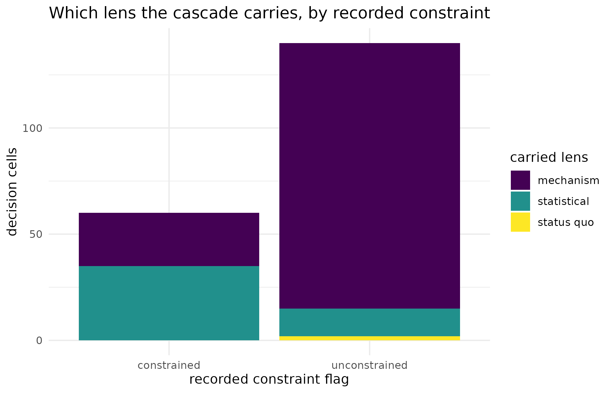

Why
Study A0 resolved 200 site-by-season nitrogen decisions by hand, walking a two-lens cascade cell by cell: a mechanism lens built from a PESTO ensemble, and a statistical lens built from the hub’s mixed model. The question an analyst closing out that study asks is a package question, not a study question: if I hand quorum exactly what each lens contributed at each of those 200 cells, does the package’s general-purpose resolution reproduce the cascade the study hand-wrote – tier by tier, lens by lens, rate by rate – and what would have happened at the handful of cells where the cascade itself gave up? This vignette answers both halves on the fixture the study recorded, with no simulator run and no network call.
What
Three verbs carry the whole of this vignette.
lens_contribution() builds one row of what a single lens
contributed to one decision cell: whether its estimate is grounded,
whether it abstained, the action it stands behind, and the reason and
grounding token it declared. contributions() row-binds
those parts into the table a resolution reads.
quorum_resolve() walks a quorum_policy()’s
declared fallback order over that table and returns, cell by cell, which
lens’s answer is carried, whether the cell decided, defaulted to the
status quo, or abstained, and the action that follows.
quorum_compare_policies() runs several policies over the
same contributions table at once, so the cost of a fallback convention
is a column rather than an argument.
Do
The fixture
The 200 recorded cells ship with the package as
a0_cells.rds. The lookup below reaches the installed copy
through system.file() and falls back to the path relative
to this vignette’s own source directory, so the same code renders
whether the package is installed or only loaded from its source
tree.
a0_path <- system.file("extdata", "a0_cells.rds", package = "quorum")
if (!nzchar(a0_path)) {
a0_path <- "../inst/extdata/a0_cells.rds"
}
tab_a0 <- readRDS(a0_path)
nrow(tab_a0)
#> [1] 200| Fact | Value |
|---|---|
| decision cells | 200 |
| status-quo rate (kg N/ha) | 60 |
| safe (no-input) rate (kg N/ha) | 0 |
| candidate rate grid (kg N/ha) | 0, 30, 60, 90, 120, 150 |
| source | Study A0 v0.2 (synthetic belt), decisions.rds, 2026-08-26 |
Each row of tab_a0 is one site-by-season cell, carrying
what the mechanism lens and the statistical lens each contributed to it
– their grounding, whether they abstained, and their proposed rate –
together with the cascade’s own recorded tiers and rate, so the
resolution below can be checked against them without recomputing either
lens.
Building the contributions table
.a0_contributions() reads only the recorded
input columns and builds one lens_contribution()
row per lens per cell, exactly as the package’s own characterisation
test does; the recorded output columns
(tier_mechanism, cascade_lens,
verdict, action_rate, …) are read nowhere in
this function, because they are what the resolution is checked against,
not what it is built from.
a0_contributions <- function(tab) {
cell <- paste0(tab$site_id, "_", tab$season)
s1 <- nrow(tab)
rows <- vector("list", 2L * s1)
for (i1 in seq_len(s1)) {
row_mech <- lens_contribution(
"mechanism",
grounded = tab$grounded[i1],
abstained = tab$dec_abstained[i1],
action = tab$dec_action[i1],
reason = tab$dec_reason[i1],
grounding = tab$dec_grounding[i1]
)
row_mech$cell <- cell[i1]
row_mech$lenses_disagree <- tab$lenses_disagree[i1]
row_mech$producer_abstained <- tab$producer_abstained[i1]
rows[[i1]] <- row_mech
row_stat <- lens_contribution(
"statistical",
grounded = tab$stat_available[i1],
abstained = tab$stat_abstained[i1],
action = tab$stat_action[i1],
reason = tab$stat_reason[i1]
)
row_stat$cell <- cell[i1]
rows[[s1 + i1]] <- row_stat
} # ends i1, over the recorded decision cells
contributions(rows)
}
contrib_a0 <- a0_contributions(tab_a0)
nrow(contrib_a0)
#> [1] 400Four hundred rows: two lenses at each of the 200 cells.
Resolving the cascade
The cascade is a quorum_policy() with two lenses in
fallback order – mechanism first, statistical second – and the study’s
own status-quo rate as the fallback for a cell where a grounded lens
declined to decide.
policy_a0 <- quorum_policy(
order = c("mechanism", "statistical"),
status_quo = attr(tab_a0, "status_quo_rate")
)
res_a0 <- quorum_resolve(contrib_a0, policy_a0)
head(res_a0[, c("cell", "carried_lens", "verdict", "action")])
#> cell carried_lens verdict action
#> 1 S01_2016 statistical decide 30
#> 2 S01_2017 statistical decide 30
#> 3 S01_2018 statistical decide 30
#> 4 S01_2019 statistical decide 30
#> 5 S01_2020 statistical decide 30
#> 6 S02_2016 mechanism decide 120
cross_tab <- table(res_a0$carried_lens)
matches_recorded <- identical(res_a0$carried_lens, tab_a0$cascade_lens) &&
identical(res_a0$verdict, tab_a0$verdict) &&
identical(res_a0$action, tab_a0$action_rate)| Carried lens | Cells |
|---|---|
| mechanism | 150 |
| statistical | 48 |
| status quo | 2 |
The cost of the two committed conventions
Study A0’s cascade is not the only way to resolve an abstention. Two
earlier conventions are kept as first-class
policy_committed() objects: one resolves an abstention to
the safe (no-input) rate, one resolves it to the status quo.
quorum_compare_policies() prices all three on the same
contributions table.
sq_rate <- attr(tab_a0, "status_quo_rate")
safe_rate <- attr(tab_a0, "safe_rate")
cmp_a0 <- quorum_compare_policies(contrib_a0, list(
cascade = policy_a0,
prior_zero = policy_committed(
"zero", lens = "mechanism", status_quo = sq_rate, safe_action = safe_rate
),
prior_status_quo = policy_committed(
"status_quo", lens = "mechanism", status_quo = sq_rate,
safe_action = safe_rate
)
))
verdict_counts <- data.frame(
policy = c("cascade", "fixed to safe rate", "fixed to status quo"),
decide = c(
sum(cmp_a0$verdict_cascade == "decide"),
sum(cmp_a0$verdict_prior_zero == "decide"),
sum(cmp_a0$verdict_prior_status_quo == "decide")
),
default = c(
sum(cmp_a0$verdict_cascade == "default"),
sum(cmp_a0$verdict_prior_zero == "default"),
sum(cmp_a0$verdict_prior_status_quo == "default")
),
abstain = c(
sum(cmp_a0$verdict_cascade == "abstain"),
sum(cmp_a0$verdict_prior_zero == "abstain"),
sum(cmp_a0$verdict_prior_status_quo == "abstain")
),
stringsAsFactors = FALSE
)| policy | decide | default | abstain |
|---|---|---|---|
| cascade | 198 | 2 | 0 |
| fixed to safe rate | 150 | 3 | 47 |
| fixed to status quo | 150 | 3 | 47 |
A figure: the constraint that moves the cascade
Every recorded cell also carries constrained, Study A0’s
flag for whether the mechanism model’s response at that site-season
hides a constraint the field data alone would not reveal. The figure
below reads carried lens against that flag directly from
res_a0 and tab_a0$constrained; it shows
something the tables above do not, because neither cross-tab conditions
on the flag.
plot_df <- data.frame(
constrained = ifelse(tab_a0$constrained, "constrained", "unconstrained"),
carried_lens = res_a0$carried_lens,
stringsAsFactors = FALSE
)
ggplot2::ggplot(
plot_df, ggplot2::aes(x = constrained, fill = carried_lens)
) +
ggplot2::geom_bar(position = "stack") +
ggplot2::scale_fill_viridis_d(name = "carried lens") +
ggplot2::labs(
x = "recorded constraint flag", y = "decision cells",
title = "Which lens the cascade carries, by recorded constraint"
) +
ggplot2::theme_minimal()
Carried lens by decision cell, split by whether Study A0 recorded a hidden constraint at that site-season. Constrained cells fall back to the statistical lens far more often than unconstrained ones.
Read
The resolution reproduces the recorded cascade exactly: every column checked above (carried lens, verdict, action) is identical to the recorded table, cell for cell. Of the 200 cells, the mechanism lens carries 150, the statistical lens carries 48, and 2 default to the status quo because a grounded lens was present but would not stand behind a number. No cell abstains in this fixture: a grounded lens covers every cell, if only after falling back to the status quo.
The committed-convention table shows what changes under the two fallback conventions the cascade replaced. Both fixed conventions decide (or default) every cell they touch and never abstain, because a fixed convention mints a rate for whatever the mechanism lens contributed, grounded or not. The cascade is the only policy of the three under which a cell can carry no number at all – though on this particular fixture, as the table shows, it never needs to. The figure makes the mechanism behind the split visible: a constrained site-season is far more likely to fall through to the statistical lens, because the mechanism model’s plateau is exactly what a constraint distorts.
Limits
This fixture is Study A0’s synthetic belt, not a field trial: the
recorded grounding, abstention and action columns are a study’s
committed inputs, not a re-derivation of the mechanism or statistical
lens from raw data, so this vignette shows resolution mechanics, not
model fitting. The loss figures attached to Study A0 – the cascade
returning a summed loss over the belt of 2,960 AUD per hectare against
5,818 AUD per hectare for a naive always-mechanism rule – come from the
study’s own economic ledger and are not recomputed here; they are cited,
not reproduced, and a reader who needs them should follow the pointer to
the study’s own report rather than trust an inline number this vignette
never computes. Agreement between the two lenses at a cell is not
established or exercised here either: this vignette reads recorded
per-lens contributions, not independent posterior draws, so
quorum_independence() and agreement_pairwise()
play no part in it – see Adding a lens for both.
What to read next
Adding a lens builds the lens contract from the ground up and works through a TMB adapter, including the agreement and independence machinery this vignette does not exercise. Getting started with quorum walks the three on-ramps – ensemble ingestion, surrogate emulation, and the koine fourth opinion – that turn a non-hub estimate into a lens in the first place. Distribution-preserving surrogates is the full worked loop behind the mechanism lens’s ensemble: ingest, emulate, invert, and check.
Reproduce
This vignette draws no random numbers: every result is a deterministic function of the shipped fixture and the package’s own resolution code.
sessionInfo()
#> R version 4.6.1 (2026-06-24)
#> Platform: x86_64-pc-linux-gnu
#> Running under: Ubuntu 24.04.5 LTS
#>
#> Matrix products: default
#> BLAS: /usr/lib/x86_64-linux-gnu/openblas-pthread/libblas.so.3
#> LAPACK: /usr/lib/x86_64-linux-gnu/openblas-pthread/libopenblasp-r0.3.26.so; LAPACK version 3.12.0
#>
#> locale:
#> [1] LC_CTYPE=C.UTF-8 LC_NUMERIC=C LC_TIME=C.UTF-8
#> [4] LC_COLLATE=C.UTF-8 LC_MONETARY=C.UTF-8 LC_MESSAGES=C.UTF-8
#> [7] LC_PAPER=C.UTF-8 LC_NAME=C LC_ADDRESS=C
#> [10] LC_TELEPHONE=C LC_MEASUREMENT=C.UTF-8 LC_IDENTIFICATION=C
#>
#> time zone: UTC
#> tzcode source: system (glibc)
#>
#> attached base packages:
#> [1] stats graphics grDevices utils datasets methods base
#>
#> other attached packages:
#> [1] quorum_0.1.0.9000
#>
#> loaded via a namespace (and not attached):
#> [1] gtable_0.3.6 jsonlite_2.0.0
#> [3] dplyr_1.2.1 compiler_4.6.1
#> [5] tidyselect_1.2.1 Rcpp_1.1.2
#> [7] jquerylib_0.1.4 systemfonts_1.3.2
#> [9] scales_1.4.0 textshaping_1.0.5
#> [11] yaml_2.3.12 fastmap_1.2.0
#> [13] kernR_0.10.0.9000 ggplot2_4.0.3
#> [15] R6_2.6.1 labeling_0.4.3
#> [17] generics_0.1.4 knitr_1.52
#> [19] tibble_3.3.1 desc_1.4.3
#> [21] bslib_0.12.0 pillar_1.11.1
#> [23] RColorBrewer_1.1-3 rlang_1.3.0
#> [25] orchestraManifest_0.2.0.9000 cachem_1.1.0
#> [27] xfun_0.62 fs_2.1.0
#> [29] sass_0.4.10 S7_0.2.2
#> [31] otel_0.2.0 viridisLite_0.4.3
#> [33] cli_3.6.6 withr_3.0.3
#> [35] pkgdown_2.2.1 magrittr_2.0.5
#> [37] PESTO_0.11.1.9000 digest_0.6.39
#> [39] grid_4.6.1 lifecycle_1.0.5
#> [41] vctrs_0.7.3 evaluate_1.0.5
#> [43] glue_1.8.1 data.table_1.18.6.1
#> [45] farver_2.1.2 ragg_1.5.2
#> [47] rmarkdown_2.32 tools_4.6.1
#> [49] pkgconfig_2.0.3 htmltools_0.5.9